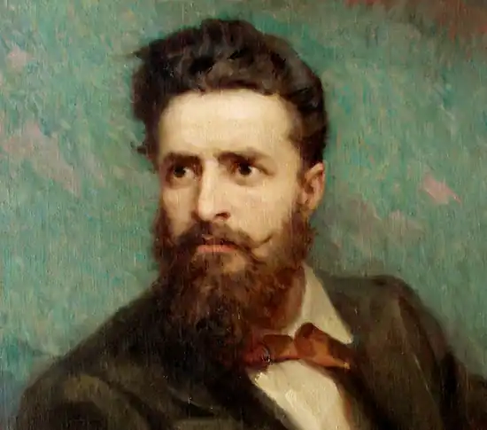

Христо Ботев (6 січня 1849, Калофер — 2 червня 1876) — болгарський громадський діяч, поет і публіцист.
Народився в Калофері в сім'ї педагога Ботева Петкова. В 1863—66 перебував в Україні, вчився в одеській гімназії, потім працював учителем в селі Задунаївці (тепер Арцизький район Одеської області). Тут познайомився з російською літературою, з творами літературних критиків — М. Чернишевського, О. Герцена, М. Добролюбова, Д. Писарєва, що відіграло велику роль у формуванні його світогляду. Ймовірно, що Ботеву були знайомі твори Тараса Шевченка.
До проблеми "Шевченко і Ботев" не раз зверталися передові болгарські критики, особливо активно — в 1930-их роках. Наприклад Л. Стоянов у надрукованій статті "Шевченко і Каравелов" (газета "Заря", 22 травня 1939) підкреслив, що така близькість Ботева і Шевченка зумовлена впливом на них революційної ідеї російського революційного руху. 1867 повернувся на батьківщину, але через переслідування емігрував до Румунії. Він брав активну участь у діяльності Болгарського революційного комітету, членом якого став вкінці 1874. З 1875 очолив Болгарський революційний рух. Вважається, що 21 травня (2 червня н. ст.) 1876 року Ботев був поранений турецьким снайпером в груди і практично відразу ж помер. Проте згідно спогадів учасників і висновку спеціальної комісії болгарських істориків, куля , котра потрапила в Ботева, не могла прилетіти з боку турок, оскільки він знаходився в такому місці, звідки позиції ворога не обстрілювалися, тому існує версія про те, що його застрелили свої ж товариші, розлючені невдачею. Літературна спадщина Ботева різноманітна й багата (поезії, оповідання, публіцистичні статті, фейлетони, послання, листи). Перший вірш — "До моєї матері" (1867). У поетичних творах (їх всього 20) Ботев оспівав любов до батьківщини, бойовий дух болгарського народу, показав зненависть до гнобителів (незакінчена поема "Гайдуки", вірші "Елегія", "Боротьба", "Хаджі Димитрій", "Патріот", "На смерть Василя Левського" та ін.). "Символ віри Болгарської комуни" став катехізисом для болгарських революціонерів. Ботеву належить переклад "Кремуція Корда" М. Костомарова. Українською мовою твори Ботева перекладали П. Грабовський, В. Сосюра, П. Тичина. Л. Дмитерко присвятив Ботеву п'єсу. 13 листопада 2009 р. в місті Одеса, на честь 160-річчя Христо Ботева встановлено пам'ятник. Пам'ятник поету розташовано в Прохорівськом саду міста.